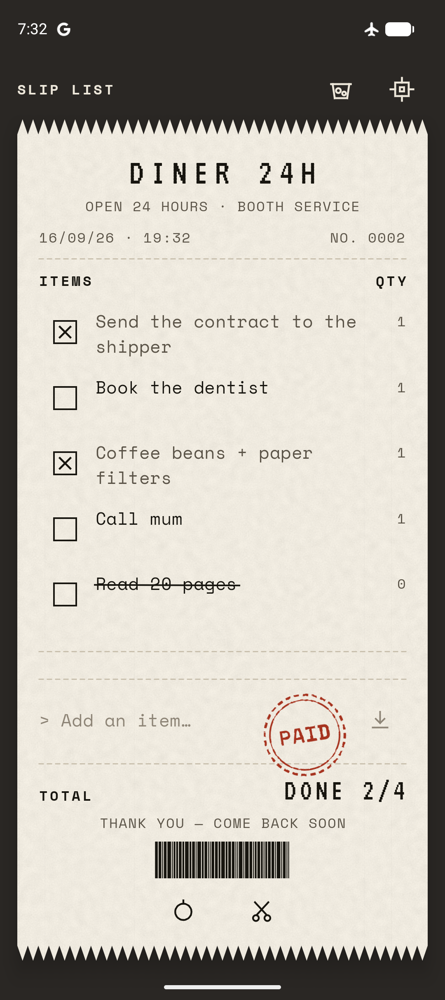
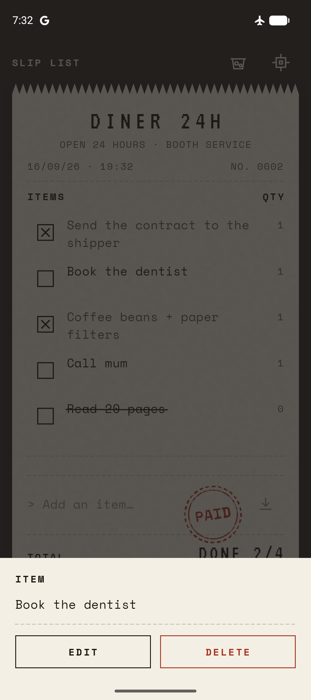
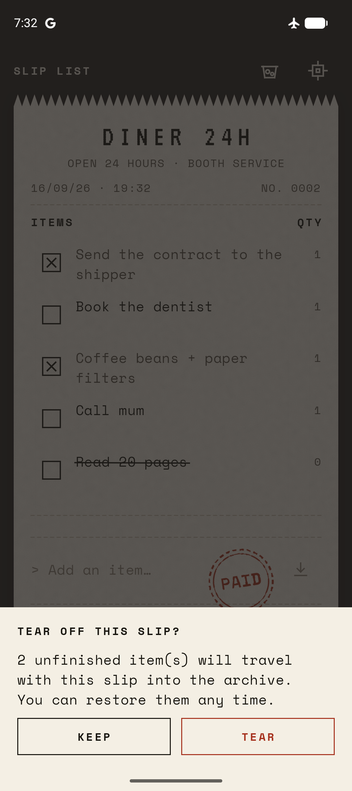
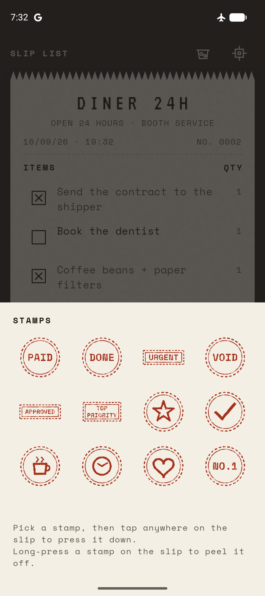
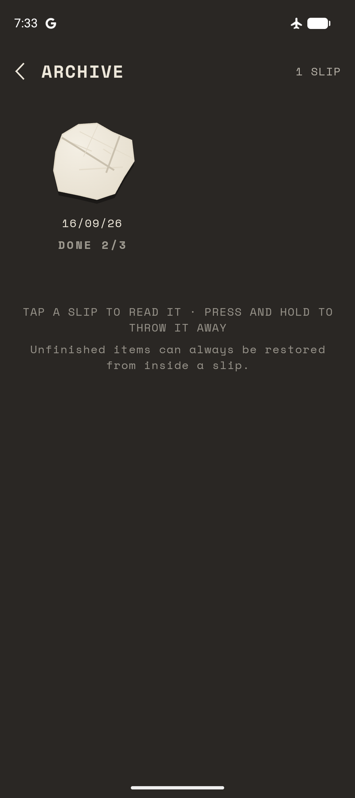
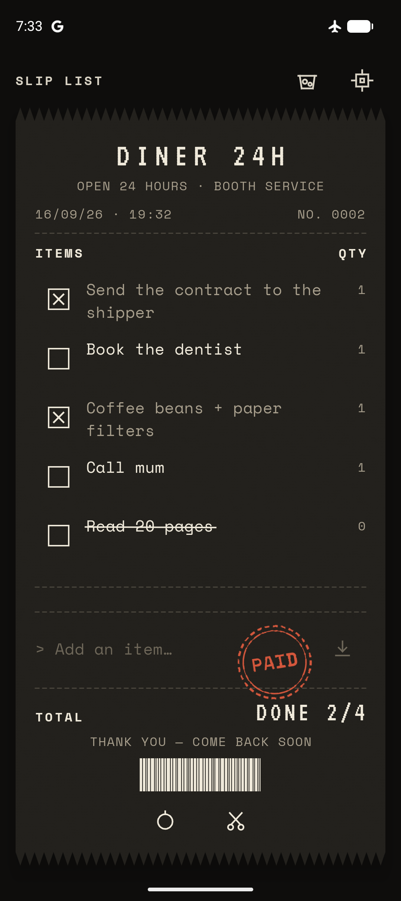

Your to-do list, printed like a receipt.
Add a task and it prints to the bottom of today's slip. Tick it off, scratch it out, and when the day is done, tear the whole thing away. No backlog, no account, no ads.

Start printing in seconds
No sign-up, no setup. Just start typing.
There's nothing to configure before your first task.
Open the app
You land straight on today's slip. No account, no onboarding quiz, nothing to set up first.
Type a task
It prints to the bottom of the slip immediately. Tap to finish it, tap the words to scratch it out.
Tear it off when you're done
Pinch the slip, confirm, and a fresh one takes its place. Yesterday rolls up and waits in the Archive.
One slip, a few ways to work it.
Every gesture on the slip means something different.

Tick to finish. Tap the words to scratch out.
Every task starts as a plain line on the slip. Tap its checkbox and it's done. Tap the words themselves instead and a pen-stroke line crosses it out, for the ones you're simply not doing anymore.
Long-press any line to edit it or delete it outright.

Pinch the slip closed. Tear it off.
When the day is over, pinch the slip and it tears along a ragged edge, with a short confirmation first so nothing goes missing by accident.
It rolls up into the Archive, and a fresh blank slip slides in to take its place. Every day gets a real ending.

Stamp it, then pick a counter to print from.
A dozen ink stamps, PAID, DONE, URGENT, VOID, a star, a heart and more, press onto any slip. Five little "stores" to print from, Diner 24H to Corner Pharmacy, each with its own header, slogan and torn edge.

Torn slips wait in the Archive, not in your way.
Yesterday's slip becomes a little paper ball you can tap open and read again, a read-only copy, so it stays exactly as you left it.
Didn't finish something? One tap restores just the leftovers onto today's slip.
Why Slip List is different
Built to end, not just to list.
An ending, on purpose
Most to-do apps let unfinished tasks roll over forever. Slip List gives every day its own slip and a real close.
Nothing leaves your phone
Every task you write is stored only on your device. There's no account to create and nothing to sync.
A little personality
Store themes, stamps, a printer-click sound, small details that make a plain checklist feel like your own counter.
The past stays out of the way
Archived slips are put away, not piled up on the same screen as today's work.

Night Shift swaps the paper for carbon copy.
Settings → Appearance → Night Shift. Same slip, same gestures, a dark paper theme for late typing.
Questions
Good to know before you print your first slip.
Do I need an account?
No. Slip List opens straight to today's slip. There's no sign-up, no login, and no account of any kind.
What happens to tasks I don't finish?
When you tear off a slip, unfinished items travel with it into the Archive. Open that slip again any time and tap "Restore unfinished" to bring them back onto today's list.
Is my data backed up or synced anywhere?
No. Everything you type is stored only on your device. There is nothing to sync because there is no account or server involved.
Are there ads or in-app purchases?
No ads are shown anywhere in the current build, and there are no working in-app purchases. Slip List is free. See the Privacy Policy for the full list of bundled SDKs.
Can I use dark mode?
Yes. Settings → Appearance → Night Shift swaps the paper for a dark carbon-copy look.
Print today's list. Tear it off when you're done.
Slip List is on its way to Google Play. Until then, here is exactly what we collect and why.
The Google Play link will be added here once Slip List is published.
- Developer
- Binary Bridge Labs Technology JSC
- Package
- com.paper.todo.sliplist
- Support
- contact@binarybridgelabs.store